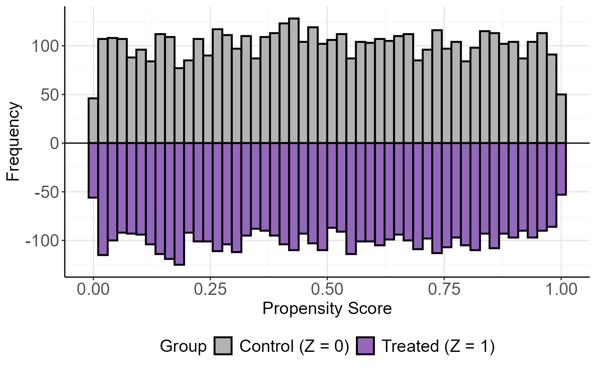

Mirror Histogram of Propensity Scores
mirror_hist.RdCreates a mirror histogram to compare the distribution of propensity scores between treated and control groups introduced by Li and Greene (2013).
Usage
mirror_hist(
object = NULL,
ps = NULL,
Tr = NULL,
bins = 70,
size = 0.5,
theme.size = 15,
grid = TRUE,
...
)Arguments
- object
An optional object of class `lbc_net`. If provided, extracts `ps` (fitted propensity scores) and `Tr` (treatment assignment).
- ps
A numeric vector of propensity scores. Required if `object` is not provided.
- Tr
A binary numeric vector indicating treatment assignment (1 for treatment, 0 for control). Required if `object` is not provided.
- bins
Integer specifying the number of bins in the histogram. Default is 70.
- size
Numeric specifying the line size for the histogram bars. Default is 0.5.
- theme.size
Numeric specifying the base font size for the theme. Default is `15`.
- grid
Logical indicating whether to include gridlines in the plot background. Default is `TRUE`.
- ...
Additional arguments passed to `ggplot2` layers for customization.
Details
This function creates a mirror histogram where the control group (Z=0) is displayed above the x-axis and the treatment group (Z=1) is displayed below the x-axis, making it easier to compare the distribution of propensity scores across groups.
Examples
# Example with manually provided propensity scores and treatment indicators
set.seed(123)
ps <- runif(10000) # Simulated propensity scores
Tr <- sample(0:1, 10000, replace = TRUE) # Random treatment assignment
mirror_hist(ps = ps, Tr = Tr, bins = 50, size = 0.8)

if (FALSE) { # \dontrun{
# Example with an `lbc_net` object
model <- lbc_net(data = data, formula = Tr ~ X1 + X2 + X3 + X4)
mirror_hist(model)
} # }